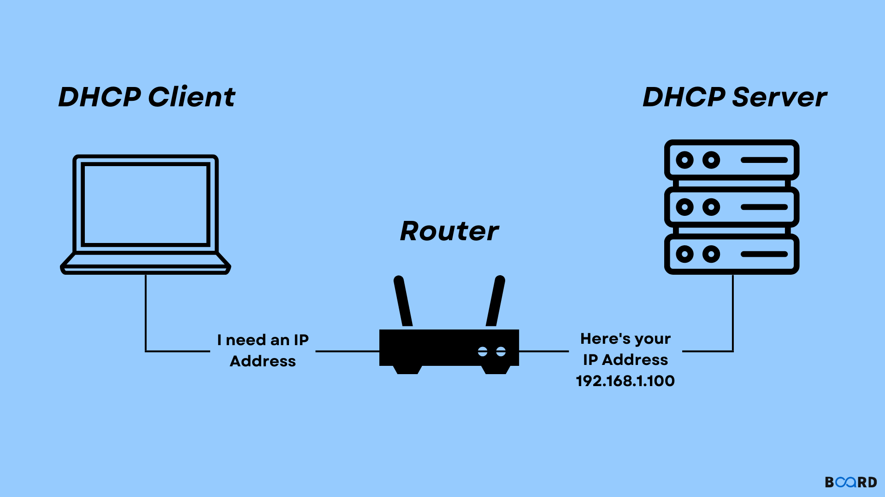

01
RÉSEAUX
Mise en œuvre d'un service DHCP
L’objectif était d’apprendre à configurer un serveur DHCP afin qu’il attribue automatiquement des configurations IP aux machines qui en font la demande.
J’ai également travaillé sur la configuration des interfaces réseau du serveur, la couche physique, la couche réseau ainsi que la configuration d’un proxy.
Voir le compte rendu